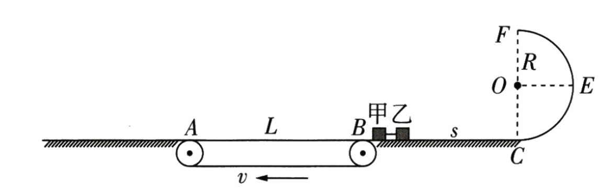

T1金考卷
如图所示，传送带AB长为L=4m，其左右两侧为与传送带紧邻的等高水平面，右侧平面BC长s=3.75m，左侧足够长。质量分别为0.4kg和0.2kg的甲、乙两物块（均可视为质点）紧靠B点静置在右侧的水平面上，两物块间锁定一原长可以忽略的轻质弹簧，开始时弹簧处于压缩状态。在C点右侧有半径R=0.7m且与BC平滑链接的光滑竖直半圆弧轨道CEF，在圆弧的最高点F处有一固定挡板，物块撞上挡板后被原速率弹回。已知两物块与传送带和左右两侧水平面之间的动摩擦因数均为$\mu=0.2$，传送带以速度v沿顺时针匀速转动，$g=10m/s^2$。某一时刻弹簧解除锁定，两物块弹开后甲刚好能从A点离开传送带，甲乙运动过程中所涉及的碰撞均为弹性碰撞且碰撞时间极短。求：
（1）物块乙被弹簧弹开时的速度大小；
（2）乙首次到达圆弧轨道最高点F时对轨道的作用力大小
（3）甲、乙两物块最后均静止时，相距的距离d与传送带的速度$v(v\ne 0)$之间的关系

【解析】：
（1）$\begin{cases}0-v_甲^2=-2\mu gL\\m_乙v_乙=m_甲v_甲\end{cases}\Longrightarrow\begin{cases}v_甲=\color{red}{4m/s}\\v_乙=\color{red}{8m/s}\end{cases}$
（2）$\begin{cases}\frac{1}{2}mv_F^2-\frac{1}{2}mv_乙^2=-mg2R-\mu mgs\\F_N+mg=m\frac{v_F^2}{R}\end{cases}\Longrightarrow\begin{cases}v_F=\sqrt{21}m/s\\F_N=4N\end{cases}\Longrightarrow 由牛三得,F_N'=4N$
（3）$最大摩擦量：v_F^2-o=2\mu gL_max\Longrightarrow L_max=16m<L+2s$
$\therefore 乙一定会与甲发生撞击$
$\begin{cases}\frac{1}{2}mv_A^2-\frac{1}{2}mv_乙^2=-\mu mg(L+2s)\\\begin{cases}v_甲'=\frac{2m_乙}{m_甲+m_乙}v_A\\v_乙'=\frac{m_甲-m_乙}{m_甲+m_乙}v_A\end{cases}\end{cases}\Longrightarrow \begin{cases}v_A=3\sqrt{2}m/s\\v_甲'=2\sqrt{2}m/s\\v_乙’=-\sqrt{2}m/s\end{cases}$
$\begin{cases}甲：v_甲'^2-0=2\mu gL'\Longrightarrow L'=2m\\乙：\begin{cases}全力加速：v_B'^2-v_c'^2=2\mu gL\\提前匀速：v_B=v\end{cases}\Longrightarrow \begin{cases}v_B'=3\sqrt{2}m/s(v>\sqrt{2}m/s)\\v_B'=v(0<v<3\sqrt{2}m/s)\end{cases}\end{cases}$
$判断：v_{B_{max}}'=3\sqrt{2}m/s时，v_B'^2<\mu g(2L)\Longrightarrow \Delta L=3m\therefore乙不可能再上传送带$
$乙通过第一段BC:v_B'^2=2\mu gL\Longrightarrow v_B'=\sqrt{15}m/s$
$\therefore 当3\sqrt{2}m/s>v>\sqrt{15}m/s时，v_B'^2=2\mu gL\Longrightarrow \Delta L=7.5-\frac{v^2}{4}$
$ 当0<v<\sqrt{15}m/s时，v_B'^2=2\mu gL\Longrightarrow \Delta L=\frac{v^2}{4}$
$d=\Delta L+L'+L_传$
综上：$\begin{cases}d=\color{red}{(\frac{v^2}{4}+6)m}[0<v<\sqrt{15}m/s]\\d=\color{red}{(13.5-\frac{v^2}{4})m}[\sqrt{15}m/s<v<3\sqrt{2}m/s]\\d=\color{red}{9m}[v>3\sqrt{2}m/s]\end{cases}$